提交
123
尼尔森十大可用性原则
尼尔森（Jakob Nielsen）是一位人机交互学博士，于1995年1月1日发表了「十大可用性原则」。1995年以来，他通过自己的 Alertbox 邮件列表以及 useit.com 网站，向成千上万的 Web 设计师传授 Web 易用性方面的知识，尽管他的一些观点可能带来争议，至少在 Web 设计师眼中，他是 Web 易用性领域的顶尖领袖。
原则一：状态可见原则
用户在网页上的任何操作，不论是单击、滚动还是按下键盘，页面应即时给出反馈。「即时」是指，页面响应时间小于用户能忍受的等待时间。
原则二：环境贴切原则
网页的一切表现和表述，应该尽可能贴近用户所在的环境（年龄、学历、文化、时代背景），而不要使用第二世界的语言。《iPhone人机交互指南》里提到的隐喻与拟物化是很好的实践。此外，还应该使用易懂和约定俗成的表达。
原则三：撤销重做原则
为了避免用户的误用和误击，网页应提供撤销和重做的功能。
原则四：一致性原则
同一用语、功能、操作保持一致。同样的语言，同样的情景，操作应该出现同样的结果。
原则五：防错原则
通过页面的设计、重组或特别安排，防止用户出错。比出现错误信息提示更好的是更用心的设计防止这类问题发生。
原则六：易取原则
尽量减少用户对操作目标的记忆负荷，动作和选项都应该是可见的，即把需要记忆的内容摆上台面。
原则七：灵活高效原则
中级用户的数量远高于初级和高级用户数。为大多数用户设计，不要低估，也不可轻视，保持灵活高效。
原则八：易扫原则
互联网用户浏览网页的动作不是读，不是看，而是扫。易扫，意味着突出重点，弱化和剔除无关信息。
原则九：容错原则
错误信息应该用语言表达（不要用代码），较准确地反应问题所在，并且提出一个建设性的解决方案。
原则十：人性化帮助原则
如果系统不使用文档是最好的，但是有必要提供帮助和文档。任何信息应容易去搜索，专注于用户的任务，列出具体的步骤来进行。帮助性提示最好的方式是：1、无需提示；2、一次性提示；3、常驻提示；4；帮助文档。
案列：
留白
留白两种
1. 一种是有形的留白区域：能确保设计有更好的结构和布局，通过设计将聚焦点放在内容区域。通常没有视觉传达上的意义，因此它能够将两种元素隔离开。
2. 另外一种是无形的留白区域：这就是默认的白色区域
表单
作为获取用户输入的重要交互方式，表单也承担将问题和答案进行配对的角色。设计者进行表单设计时，应当注意这几点：
1、确保用户了解要提供什么信息，以及为什么要提供这些信息。
为初级用户／偶尔访问的用户提供白话作为『标签』；为领域专家提供专业术语作为『标签』。当需要用户提供敏感信息时，通过『输入提示』来说明系统为什么
要这么做，eg：需要获取身份证号码、手机号码时。
2、让用户能在上下文中获取信息，帮助他完成输入。
使用『良好的默认值』、『结构化的格式』、『输入提示』、『输入提醒』等方式，避免让用户在空白中完成输入。
3、对错误敏感，并尽可能宽容。
通过不同的『校验』规则和形式进行反馈，避免用户在点击提交后才刚刚开始『校验』，让用户提前纠正错误；依据『容错格式』，允许用户以多种格式和语法输入，eg：用户在电话号码输入框中多输入了一个空格，系统存储时可以主动删掉空格，但是不需要告诉用户这是一个错误。
4、不要提出不必要的问题。
禁用主按钮
1、标签
2、输入框
3、校验反馈
4、动作
通常表单会有四个部分组成。
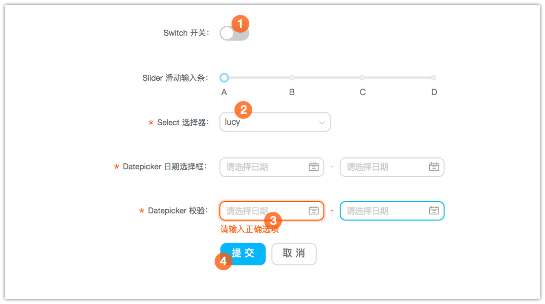
内容
当输入框非常少时（一般少于 3 个），如果用户没有在必填项中输入内容，可禁用『提交』等主按钮；当输入框非常多时（超过 5 项以上），不建议禁用主按钮。
交互
在一种描述性的上下文中出现输入项，可以帮助用户理解当前的状况，以及需要提供什么数据。
组合输入框
当两个输入框关联性很强时，可以前后拼接，减少页面空间。
提交

12345
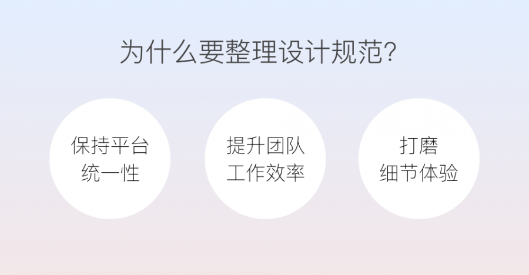
设计规范的价值
1.保证平台统一性。
统一性是交互设计的一个基本原则，在一个长期迭代多人合作的项目中，不同的设计师会负责不同的模块，每个人都有各自的思路，就有可能会对相同的元素做出了不同的方案，对于用户来说容易造成困惑，对品牌整体形象的建设也没有好处。所以对于较大型的产品，最好有设计规范来定义基本的元素，帮助众多设计师一起做出有统一性的产品。
2.提升团队工作效率
2.提升团队工作效率
对于同一个基本元素，如果没有设计规范，交互设计师需要设计一次交互方式，视觉设计师需要设计一次外形，UI开发同学需要开发一次，每个不同的设计师遇到这个元素时都可能重新设计一遍。但如果有了设计规范，只需设计一次，团队中任何一个设计师需要用的时候直接拿来用就可以了，也不需要再进行视觉和开发，极大的提升了效率。
3.打磨细节体验
在整理每个元素的规范时，设计师都需要对其场景、状态考虑清楚。在整理的过程中，经常会发现一些以前没注意到的问题，并进行优化。把一个小元素单独拎出来仔细考量，写成一篇完整规范的过程，其实就是在打磨细节的过程。
4.什么时候做设计规范？（when）
虽说最理想的情况是在做设计前把设计准则、风格、规范都定义清楚，但在实际项目中很少能有条件这样做。项目初期总是小步快跑、先上再说，产品在不断试错的同时设计也是在不断试错，在一开始就能定义一个完全“正确”的规范其实是不太现实的。
通常情况下，在产品发展日趋平稳，产品定位和品牌形象都比较确定的时候；参与设计的人越来越多，统一性和效率的问题渐渐显现出来的时候，就是需要定义和整理设计规范的时候。
5.什么样的规范是好规范？（what）
规范是给人阅读的，写好一篇规范就像是设计好一个界面，我们也应该确定目标用户、用户目标、设计目标后，再进行设计执行。
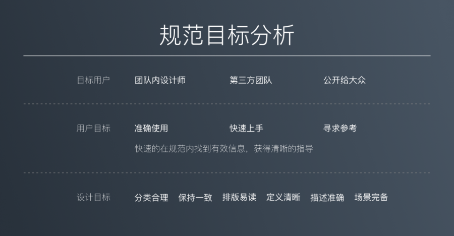
一.用户目标
设计规范的目标用户有可能只是一个团队内的设计师，有可能是第三方的工作人员，有可能是公开给所有人都可以查看的。不管是哪种类型的用户，都会有一个基本一致的目标，那就是“快速的在规范中找到有效信息并获得指导”。在这个一致的目标下又有所不同之处。
1.团队内设计师——准确使用
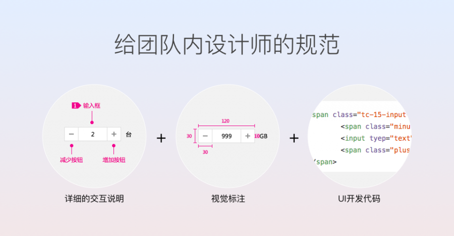
团队内的设计师通常情况下需要尽可能的依据规范做出“准确”的设计，保证元素使用在正确的场景下，保证整个平台的一致性。所以给团队内的设计师看的规范相对来说会详细很多，以腾讯云内部设计规范为例，需要包含实际的交互场景举例及说明帮助交互设计师理解和判断，需要包含视觉标注帮助视觉设计师和UI工程师查阅等。
2.第三方团队——快速上手
给第三方工作人员的设计规范又有所不同，他们的目标更侧重在合作时快速上手，直接将团队内部详细的长篇大论拿给他们看很难保证他们有耐心阅读，因此很难保证他们遵循规范。针对这种情况，更适合整理出典型页面，UI Kit，加之简单易懂的说明给他们，让他们快速了解页面应该怎么布局，可以用现成的元素进行快速拼接就可以了。
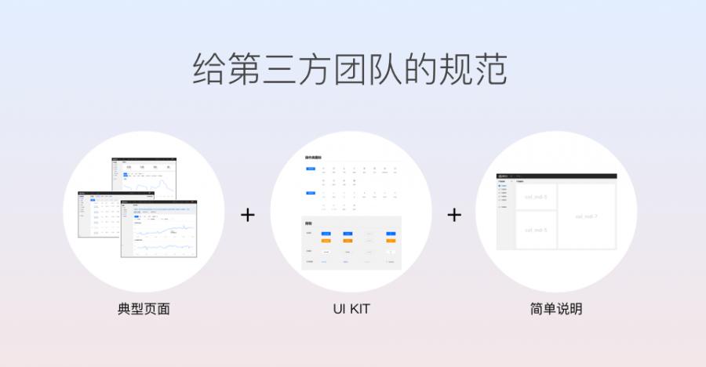
公开给大众的设计规范有非常详细的，也有比较简单直接的，主要还是要根据公开的目的来确定。通常情况下只是起到参考作用的公开指南，内容会比团队内部的设计规范精炼的多，大都只是展示定义描述、样式，再配以正确和错误示范帮助理解。而某些公开规范同时起到给合作方使用的功能时，就会包含更多详细的内容，详细的描述、视觉标注、代码等等。
3.公开大众——寻求参考
二.设计目标

确定用户目标之后，设计目标就很清晰了，一个好的规范应该是高效的、简单易懂的，以内部设计规范为例，具体执行时，我们应该确保分类合理、规范本身保持一致、布局排版易读，来提升设计师查阅的效率；确保定义清晰、描述准确、场景完备，来帮助设计师理解和使用。
1.分类合理
一整套规范的内容通常都很多，为了能让用户快速查找，合理的分类必不可少。
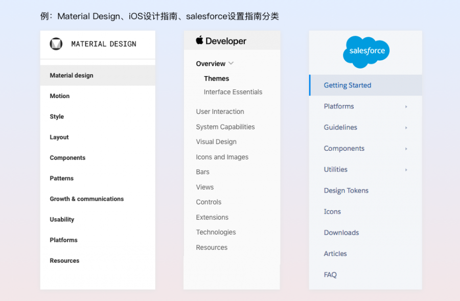
2.保持一致
每篇规范包含的内容保持一致、格式保持一致可以给用户构建心理预期，让他们看一篇规范就知道每篇都包含哪些部分，可以找到哪些信息。
3.排版易读
通过合适的字体字号、间距留白减少用户阅读的疲劳感，图片与说明清晰的结合，正确和错误示例要能明显区分，使用表格来组织信息。
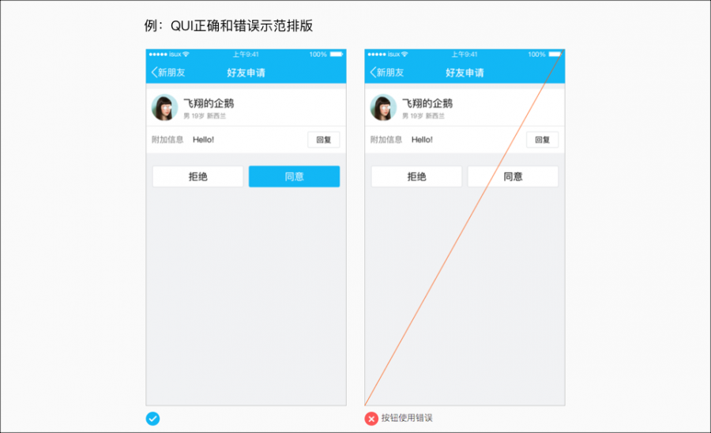
4.定义清晰、描述准确、场景完备
用简单易懂的语句进行定义和描述，帮助用户了解是什么、怎么用、哪些场景可用。（规范不可能包含所有场景，但应该包含大多数常见场景。）
6、如何系统的整理规范？（how）
1.整理规范内容及分类
做之前先明确我们需要整理哪些内容，这些内容的分类是怎样的，下图是我们整理腾讯云规范时列的内容及分类，初始时列举的内容可能不全，但没有关系，先把最基础的分类和内容定义好，后续发现有遗漏的内容再添加进去即可。
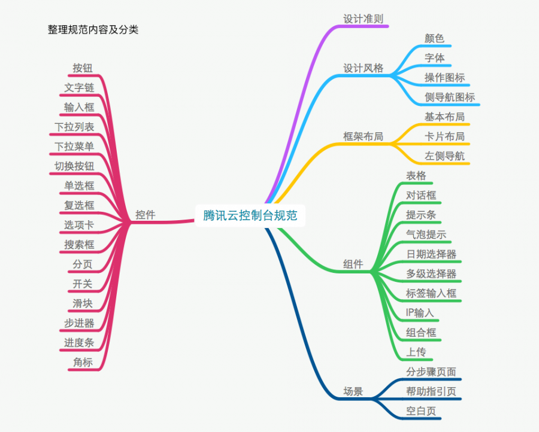
2.确定优先级与分工
由上图可以看出，一整套规范包含的内容非常的多，所以内容和分类整理好后，还需要确定每块内容的优先级和分工。从大的模块上说，首先应当确定整体的设计风格和框架，整体确定后才好确定细节的风格；其次的优先级最好是控件、组件、场景，因为控件组成组件，控件和组件组成场景，所以先确定小的控件后，组件和场景更容易确定。至于分工，规范的制定是整个团队的事情，最好团队中的设计师都能够参与，互相分担工作量以提高规范整理的效率，也能够确保规范是在大家的讨论下制定而成，每个人都参与过并赞同结论。
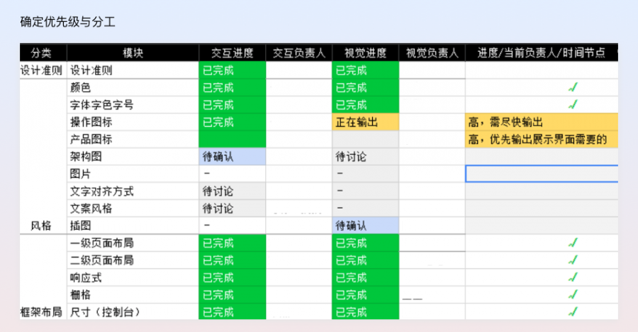
3.确定规范展示形式及推进流程
其实确定规范展示形式也是确定规范目标用户，要确定规范是给谁看的，展示在网站上还是直接用文档承载，网站是否对公众开放等问题。确定了这些问题后就可以确定规范的详细程度、大体的展示形式。
推进流程指的是整个项目要怎么跑，涉及到每个设计师接到分工后如何输出，何时讨论，怎么输出，交接给谁等等问题。例如我们的推进流程是每周固定时间开规范讨论会，每次确定几个要讨论的内容，负责的设计师整理问题，在会议上和大家一起讨论敲定结果，经过两周讨论后输出最终版本，交给下一个负责人。
4.制定规范的规范
规范本身要遵循什么规则，也是需要事先确定的，我认为包括两个部分，一是设计原则，二是输出物规范。
根据整个产品的目标用户、用户及产品目标可以确定我们的设计原则，所有的规范梳理都要遵循最基础的设计原则，以满足用户及产品需求，提升整体的体验。
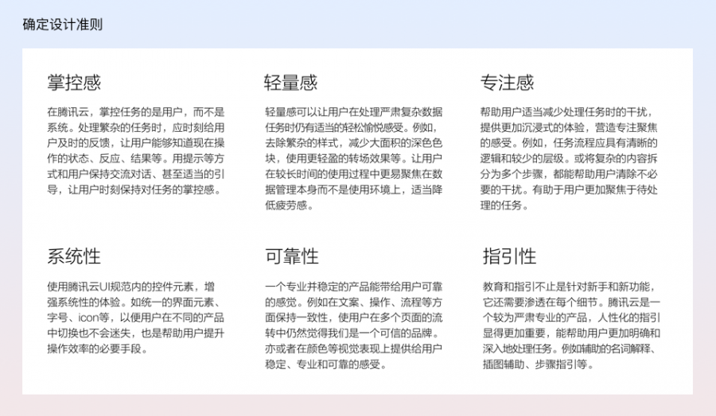
之前有提到过规范自身保持一致性是提高规范阅读效率的一部分，而且为了提升设计师输出的效率，事先制定好规范输出物的规范可以帮助设计师按照一个既定的格式进行输出，同时又能保持一致性。我们的输出物规范中包括：
规范包含的内容，需要有描述、类型及场景、使用说明、视觉规范、补充说明、相关下载、负责设计师
规范插图的尺寸、背景色、板式、字体及用色、正确及错误示例图样式等
二.单个规范的整理流程
整体计划制定好之后，就需要开始一个个整理规范内容了。整理单个规范的内容也是有流程可寻的，如下图所示。下面以整理“对话框”规范为例，讲解一下单个规范整理的流程。
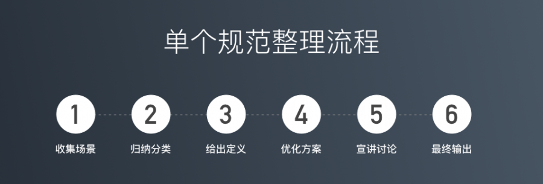
1.收集场景
给已经趋于成熟的产品整理规范，第一步就是要先收集场景。以对话框为例，对话框可能出现的地方很多，类型也各有不同，在没有规范之前，产品中可能会有各种各样的对话框，每个设计师做的可能都有些差别，所以第一步，是把产品中所有出现过的对话框都收集起来。
2.归纳分类
场景收集完后，就要对收集到的所有场景进行归类，例如对话框按照样式不同可以分为“模态对话框”和“非模态对话框”，在模态对话框中按照功能不同又可以分成“确认类对话框”、“反馈&警示类对话框”、“表单类对话框”。归纳分类的作用在于，可以把众多的场景收拢成几个典型的种类，只对典型种类进行定义和详细描述就可以很好的给用户起到指导作用；同时归类之后减少了规范对象的种类，更好的保证产品的一致性。
3.给出定义
分类确定好后就可以开始给出定义了，首先给出整个规范对象的定义，例如对话框是什么，什么情况下适合用对话框等。除了整体的定义外，每个类型也需要有定义，帮助用户理解每种类型有何差别，什么场景选用哪种类别等。
4.优化方案
分类和定义都确定后，需要对各类型进行优化输出最终的规则，对于这些细节规则，无法确定的时候可以寻找一些优秀案例来参考，例如优秀的产品、有名的设计指南等。同时可以根据实际场景输出多种优劣不同的方案，和大家一起讨论对比。
5.宣讲讨论
规范整理出后可以在讨论会议上同步给大家，最好事先把所有需要大家一起讨论确定的问题列出来，把对比方案都做好，提高讨论的效率，和大家一起来敲定最终的方案，同时也让每个设计师都了解规范的细节。
6.最终输出
所有问题都敲定后即可按照输出物规范进行输出，输出后交接给视觉设计师。
规范整理完之后还有什么工作？
设计稿输出后还需要确保还原度、保证其正常上线、收集反馈意见不断进行优化。设计规范也一样，做完规范后也要确保还原度，推动新的规范落地；不断收集遗漏的部分补充进规范中，发现问题并不断优化，持续的维护更新规范文档。
有了完善的规范如何进行创新？
规范和创新从来都不是对立的。
1.规范不可能囊括所有场景，即不可能所有场景都需要100%遵循规范。
对于一些规范中没有包含的场景，或者不适合遵循规范的场景，例如一些特殊的运营活动，一些特别的功能点，还是有可以创新的余地的。
2.体验好是第一要义。
遵循规范是为了保证一致性从而保证体验，如果在某些场景下不遵循规范也不会因为影响一致性而影响体验，反而对特定场景有更好的效果时，不遵循规范也没什么关系。
3.规范不是永恒不变的，还有优化的空间。
规范也需要不断的优化、迭代更新，优化规范本身也是创新的过程。例如样式风格随着时间的变化需要更新，例如交互方式也有可能会有新的场景需要补充等等。
4、整理规范可以锻炼哪些能力？
写一篇分类简单合理，场景、细节考虑完备，展示清晰易读的规范，也不能算是一件很简单的事情，需要用到设计师的很多基础能力，例如：
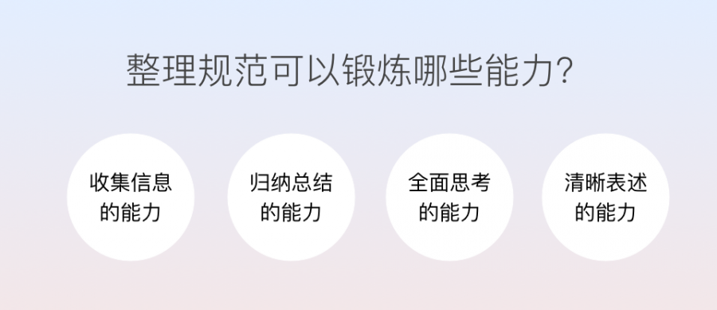
1.收集信息的能力
在整理规范时，收集场景、收集定义、收集优秀案例都可以锻炼到我们的收集信息能力，这个基本能力在日常工作中也经常需要用到，例如做需求前需要先收集需求背景相关信息，了解清楚是什么、为什么、怎么做的问题。
2.归纳总结的能力
将收集到的信息进行归纳整理，得出简单合理的分类的过程，就是锻炼我们归纳总结能力的过程。在设计时，大到信息架构的设计，小到表单信息分类展示，都需要此能力帮助我们更好的处理信息，更好的将信息展示给用户。
3.全面思考的能力
我一直认为，全面思考的能力是交互设计师最重要的能力。在整理规范时，既需要对全局全面思考，例如什么情况适合用对话框，什么情况不适用，不同类型的对话框应该在哪些场景用等等；也需要对细节全面思考，例如对话框中需要放几个按钮、按钮顺序应该怎么定、按钮文案怎么才好理解等等。在日常工作中也是一样，既要思考全局的问题，例如用户目标、产品目标、整体使用流程等，也要思考细节的问题，例如异常情况怎么办、极限情况有哪些等。
4.清晰表述的能力
在整理过程中和大家讨论，可以锻炼自己的表达能力和说服对方的能力；在输出规范时，又能锻炼清晰的描述能力，帮助用户快速抓住重点。表述能力也是交互设计师的必备能力之一，因为日常工作中经常需要和上下游各类同事沟通、PK，清晰的表述能力可以帮助设计师把全面思考的结果告知他人，并说服他人，推动工作更好的进展下去。
最后
再来回顾一下全文的主要内容：
在产品发展到稳定阶段、参与的人越来越多时，还是十分有必要整理设计规范的，因为它可以帮助我们提升产品统一性、团队工作效率以及细节体验。
好的设计规范应该是能让用户高效获取到有效信息的，但针对不同的受众，规范本身也会有不同的侧重点。
规范的制定最好能有系统的组织、遵循一定的流程来完成，以确保规范有条不紊的整理和推进。
规范输出后并不代表完成，还需要推动落地、迭代优化、维护更新。
有了规范也不代表设计师就没有创新的空间了，规范和创新从来都不是对立的。
整理规范对设计师的基本能力有很好的锻炼作用，所以各位设计师们整理规范时不要嫌琐碎麻烦，它可以让我们慢慢变强！